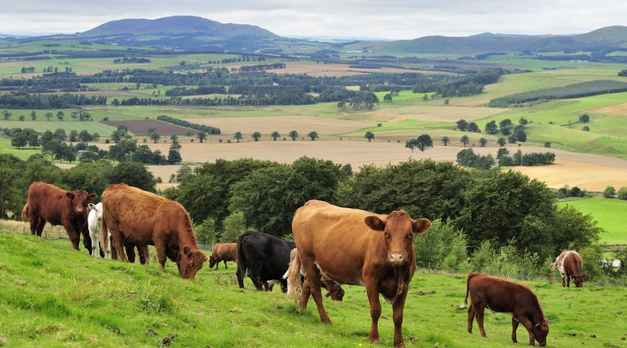

At Ashkirk Farms, the animals take center stage! Our petting farm is a lively haven filled with a variety of lovable creatures waiting to meet you. From gentle goats and cuddly rabbits to playful piglets and soft, woolly sheep, each animal has its own unique charm. Watch as the chickens roam freely, the ducks splash in their pond, and the miniature ponies trot around their paddock. Visitors of all ages can get up close, feed some of the animals, and learn about their care and personalities. It's a heartwarming experience that brings you closer to the wonders of the animal world!
